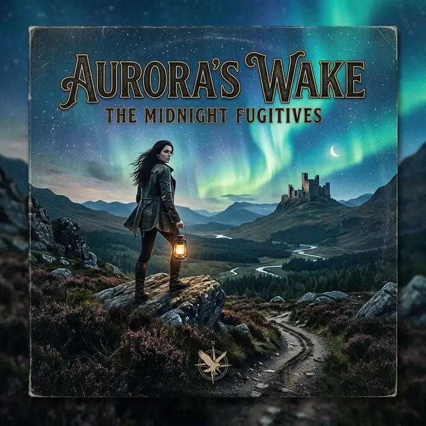

The
Headliner
This week's deep dive into the sonic landscape of the underground. Raw, unfiltered, and essential.
Read the Latest ReviewThe Ms Music Interview
Exclusive: Why the vinyl revival is more than just nostalgia.
Front Row Reviews
9.2

MUST LISTEN
Neon Echoes - Synthetic Dreams
A masterclass in modern synth-pop.
8.5
REVIEW
The Void - Static Silence
Gritty, industrial, and hauntingly beautiful.